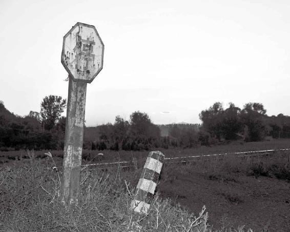
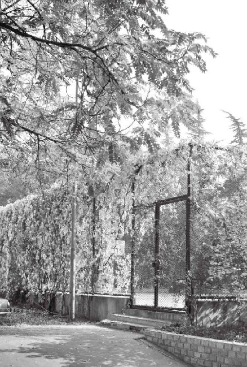

春季刮东风，人容易肝火过旺
夏季刮南风，人容易得心病
秋季刮西风，人的肺容易受伤
冬季刮北风，容易伤肾
风能生万物，也能害万物
经文：
“东风生于春，病在肝，俞在颈项。南风生于夏，病在心，俞在胸胁。西风生于秋，病在肺，俞在肩背。北风生于冬，病在肾，俞在腰股。中央为土，病在脾，俞在脊。”
春季刮东风，人容易肝火过旺
为什么春天患肝炎、红眼病、脑出血的人很多
梁冬：“东风生于春，病在肝”，怎么解释？
徐文兵：东边来的风春季居多，冬至那天也会刮一阵儿，但是不长。东风往往生发于春天，从东边刮过来，但是这种风如果太剧烈的话就会引起什么问题？
梁冬：肝病。
徐文兵：中医看病，首先要辨阴阳、表里、虚实、寒热，你笼统说肝病，那它是肝虚还是肝实？
梁冬：是不是应该叫肝实啊？
徐文兵：东风起来后，会把人的肝气生发起来，让肝的阳气太过，肝火过旺，或者说它实性的成分居多。所以，春天往往是暴发肝炎、红眼病或者是脑出血的时候。
东风起来后，会把人的肝气生发起来，让肝的阳气太过，肝火过旺，或者说它实性的成分居多。所以，春天往往是暴发肝炎、红眼病或者是脑出血的时候。
梁冬：有一年上海的肝炎是不是就春天发作的？那为什么要得红眼病呢？肝开窍于目吗？
徐文兵：对！肝开窍于目，包括很多眼睛的病，都是跟肝有关。你可能没见过，眼球震颤。定睛一看，有些人眼睛是定不住的，他眼睛在颤，这都是风。
肝开窍于目，包括很多眼睛的病，都是跟肝有关。
梁冬：那么脑出血又是什么原因呢？
徐文兵：因为怒发冲冠啊。肝经络很有意思，它起在大脚趾，沿着大腿小腿的内侧往上走，环绕阴器（外生殖器），然后潜行到肚子里面，会连接到女性的卵巢，当它走到胸腔的时候又流露出两个穴，一个叫章门，另一个叫期门，这都是“门”。一直在里面潜行，最后直冲向颠顶到百会，由于肝经是从脚冲到头，所以正常的肝气是从底下往上走。如果肝气太过，那就……
肝经是从脚冲到头，所以正常的肝气是从底下往上走。
梁冬：冲出来了。
徐文兵：绝对就是气冲牛斗，怒发冲冠。所以，很多脑溢血的人发病常常是“冲冠一怒为红颜”，肝气“呱”一下就起来了。肝气为什么会病在头呢？当外界的东风起来，鼓舞起你的肝胆之气，你就会出现头重脚轻这种病症。
肝气为什么会病在头呢？当外界的东风起来，鼓舞起你的肝胆之气，你就会出现头重脚轻这种病症。
梁冬：“肝气”主“顶天立地”也是有道理的吧？
徐文兵：对呀，头重脚轻，脚踩棉花，因为上实下虚呀！很多高血压症都是这样，他们面红耳赤、眼睛充血，腰腿都是发飘发软。
梁冬：这就是李老（著名老中医李可）常常讲过的阳气上浮症状吧？
徐文兵：对，阳气往上冲。碰到这种病的话，你赶紧要去帮他收敛，我们叫“收敛阳气”。怎么收敛呢？用一些金石介类药，用一些特别沉重（就是质地沉重）的药，比如，龙骨、牡蛎、代赭石，或者是用磁石、贝壳、石决明等，这些药都有一种沉潜下行的力量。
梁冬：沉香行不行？
徐文兵：沉香也行。
梁冬：那用金鸡独立行不行？
徐文兵：这种人头重脚轻，两条腿着地都站不稳，还得拄个拐杖，你让人金鸡独立肯定不行。
梁冬：那反过来从技术上说，倒立行不行？
徐文兵：不行。你说的这些方法都属于恶治法，就是说置之死地。
梁冬：“东风生于春，病在肝，俞在颈项。”“腧”字很有意思，不知道的人以为念“y%”呢。
徐文兵：“腧”，它原来的文字就是射精的那种状态——它上面是个三角，底下是个“肉”，“肉”下面是“水”。它发两个音，一个是通神了，愉悦了，发“愉”的音；另外呢，你在传输你的精子，所以它有输送的意思，发“输”的音。就是说当肝气往上顶的时候，它的气会从哪儿冒出来，好像有个小烟囱一样。
“腧”，它原来的文字就是射精的那种状态——它上面是个三角，底下是个“肉”，“肉”下面是“水”。它发两个音，一个是通神了，愉悦了，发“愉”的音；另外呢，你在传输你的精子，所以它有输送的意思，发“输”的音。
学针灸，我们经常用到一个背腧穴。什么叫背腧穴？五臟六腑在体内，你看不见，但是它气在前胸和后背，或者在胸腹部和后背，都有一个小口。
五臟六腑在体内，你看不见，但是它气在前胸和后背，或者在胸腹部和后背，都有一个小口。
梁冬：就像大地的火山口。
徐文兵：你的理解非常好。它在那儿冒气，所以把在后背上的这些穴叫背腧穴。很多人自学中医的，就说背“y%”穴，应该念“输”。就是说，臟腑的精气，从这儿输布到体表。当你触动腧穴的时候，你也能触动它里面的臟腑。在胸腹部，它也有代表穴，叫募穴。募是聚集到一块儿的意思。身体有361个穴位，我们砍掉胳膊腿儿人还能活，但没有腔，人就活不了。腹募穴和背腧穴更有诊断和调治意义。
脖子僵的人性格犯轴，反之亦然
徐文兵：肝气受了春天东风的鼓舞以后，容易往上走，它从哪儿冒出来？你怎么给肝气打开一个口，让它泄掉、让它冒走，别往你脑子里面冲，别让你得高血压、脑出血、脑溢血？这叫“俞在颈项”。
梁冬：就是脖子后面的部分对不对？
徐文兵：颈和项不一样。我们最早背唐诗——“鹅鹅鹅，曲项向天歌”，不是曲“颈”向天歌——项是后脖子，颈是前脖子。现在我们老说的颈椎病，其实应该念项椎病。你发现没有，性情耿直、郁怒的人，往往有个特点？
性情耿直、郁怒的人，往往有个特点。他们脖子上面的胸锁乳突肌、斜方肌，都是硬的。按北京话就是说，这些人都轴，脖子是拧巴的。
梁冬：背上很厚吗？就是颈的后面吗？
徐文兵：他们是戆头、僵脖子。
他们脖子上面的胸锁乳突肌、斜方肌，都是硬的。按北京话就是说，这些人都轴，脖子是拧巴的。
古代有一个强项令，他向皇帝谏言，提个意见是对的，但皇帝不同意。皇帝让人摁着他的头让他认错，他却梗着脖子，不肯认错。最后，皇帝只好找了个台阶下，对他说，你是个强项令——强是坚强的“强”，就是说你的脖子是不软的。我临床中看到很多人的脾气比较倔，不容易拐弯。
梁冬：缺乏弹性。
徐文兵：这种人都是肝气郁结比较厉害的。
梁冬：我估计，这些人通常不是长得很胖的。
徐文兵：这些人不柔和，是木性人格。你如果把他的脖子揉软了，就能缓解东风给他身体带来的伤害。我们经常讲，气得脸红脖子粗— 一下子脖子就粗起来了。你看那斗鸡，见过斗鸡没？
梁冬：鸡的毛都会立起来了。
徐文兵：脖子上的毛全立起来了。
梁冬：这真有道理。
徐文兵：大家平常要注重自己脖子的保健。有些女士做美容，脸上抹得再光、拉皮做得再好，却遮不住脖子上的那些一圈一圈一道一道的皱纹。很多人会围条小围巾遮一下脖子上的皱纹，这其实说明她们的肝气弱了。还有一些颈椎病人，他们脖子的肌肉死硬死硬的，因为他们老是对着电脑，要不就是伏案工作，所以把自己脖子闹得很僵。当你脖子僵了以后，就会影响到你的性格。相应地，你的性格不拐弯，也会让你的脖子僵。当你人为地把脖子弄僵以后，你就开始犯轴了。
当你脖子僵了以后，就会影响到你的性格。相应地，你的性格不拐弯，也会让你的脖子僵。
梁冬：这就叫阴阳互根。
徐文兵：对，就是互为因果，身心互相影响。
梁冬：说到此，我想起了一件很有趣的小事情。我去吃虫草炖鸭，有个高人怎么炖鸭，你知道吧？他把虫草就像摁钉一样，在鸭子的背上戳了一溜。他告诉我，在鸭子的督脉上戳一溜虫草，尤其要在颈项部分戳上，这样，虫草才能吸收来自鸭子的真气。
徐文兵：现在，武汉传过来吃鸭脖子，也有人烤鸡脖子吃。为什么那儿的肉好吃呢？因为鸟经常是停下来就左顾右盼，鸭子还习惯回头把自个儿尾巴上皮脂腺分泌的油叼过来，均匀地涂在自己的羽毛上，因为它是水禽，这样它就不沾水。它脖子上的肉是活肉，气血流通特别好。为什么啃那儿的肉有味儿，啃鸡胸脯就没味儿？因为那儿的肉不经常动。
梁冬：对，肉经常动，它就吸收得比较好，入味儿。
徐文兵：因为那里气血通畅，属于气脉常通的地儿，气脉不通的地儿，吃起来就发柴。
梁冬：因为它们没有强烈的自我意识形态，所以它们没有那么轴，所以脖子就软，软了之后就比较好。
徐文兵：就好吃。
颈椎不好，要先从脾胃、肝上找原因
梁冬：讲到颈项的问题，现在很多人都有各种颈椎病。
徐文兵：颈椎病就是我们说的后脖子硬，或者叫项椎病。大家别以为颈椎病就是脖子的事儿。根据我的临床经验，很多颈椎病人，本身就有很严重的内臟问题。当他们梗着个脖子看东西的时候，心口窝那儿是窝着的。有颈椎病的人往往都有很严重的胃病，很多人调治这种病，往往会给病人揉脖子。但我从来不先给人揉脖子，而是先给他调理肠胃功能。
根据我的临床经验，很多颈椎病人，本身就有很严重的内臟问题。当他们梗着个脖子看东西的时候，心口窝那儿是窝着的。
梁冬：你前边说到，肝气发自于颈项，肝太强是不是就会克脾胃，木太过就会克土呢？
徐文兵：肝太强就把脾胃给制住了。所以调治颈椎病，一定不要颈椎僵了就治颈椎，你得从肝上找原因、得从脾胃上找原因。
调治颈椎病，一定不要颈椎僵了就治颈椎，你得从肝上找原因、得从脾胃上找原因。
另外，调治颈椎病，我最反对去做按摩、扳脖子，啪啪啪，听那“嘎啦”一声，追求病态的快感。还有做牵引，健康的人的肌肉是有弹性的，当那些颈椎的生理弯曲出现了一些变化或者是一种颈椎的小关节出现小紊乱的时候，它在你转头顾盼的过程中有个调节，“咔吧”一下，它又复位了。
得颈椎病的人都是肌肉僵死的人。肌肉僵死以后，它就失去了对椎体的这种固定作用，或者这种复位的作用。在这种没有弹性的情况下，你给它强制做牵引、去扳脖子，这是伤害自己。
所以，得了颈椎病，先要调治自己的消化系统问题，调治内臟，然后找一个好的按摩大夫或者扎针的大夫，用轻柔的办法，慢慢地把你后脖梗上那些死肉弄活了，慢慢变得温度提高、有弹性了，然后再去扳脖子。
没事老点头、常常仰望星空，颈椎就不会出毛病
梁冬：问一个我的体验问题，我脖子后面地方有一小坨小硬块，这是什么东西啊？
徐文兵：应该是大椎，这一般人都有。古代人出书为什么竖体排版？
梁冬：点头嘛。
徐文兵：点头称是。竖体排版，你看书时，颈椎就是上下活动，而且点头称是会让你觉得古人说得对。现在的书都变成横排版，颈椎生理的弯曲就会受影响。真正老点头的人或者是老仰望星空的人，都能保持颈椎的生理弯曲。现在很多人除了脖子硬以外，颈椎的生理弯曲消失、变成直脖子了— 摸摸他的脖子，很硬；摸摸他的生理弯曲，没了。
真正老点头的人或者是老仰望星空的人，都能保持颈椎的生理弯曲。
春天，头发晕、手发麻，都是气血过不去
徐文兵：很多春天患颈椎病的人，颈椎稍微一动，头就发晕，然后手开始麻。这种手麻，按现代医学的解释，是压迫到神经或者是怎么了。中医讲，所有的麻的症状都是气血过不去。
中医讲，所有的麻的症状都是气血过不去。
如果出现晕的情况，有一种所谓的晕就是旋转，还有的人形容晕：“腾”地一下气血往上一涌，就好像一个闸门突然打开，就冲到头上去了，其实他形容的不是晕，而是昏。这种人很危险，很多人出现脑溢血，就是这么发现的。1990年，我大学毕业后，在协和医院急诊室实习。记得当时我参与抢救的一个人叫施光南。
梁冬：哦，施光南你也抢救过？
徐文兵：他是作曲家，那会儿我亲自参加抢救，而且带我的老师特有意思，他叫许文兵，跟我的名字后面俩字一模一样。据说，施光南当时就是发了一下怒气，可能是在教学生的时候，突然站起来拍了一下钢琴，就脑溢血了。他到医院以后就脑疝了。
什么叫脑疝呢？就是脑里面出现水肿或者出血，出现了对大脑组织的压迫。脑疝的一种是一个瞳孔大、一个瞳孔小，这明显就是脑子里边儿出现了问题。如果说有抢救可能的话，就是马上开颅手术，把里面的这种瘀血、血肿给它放出去，也就是把肝气冲上来造成血管破裂的这种后果给它清除掉，人就有生还的可能。
梁冬：施光南老师是不是长得很瘦啊？
徐文兵：不瘦。我们当时抢救他的时候，他挺魁梧的。这就是说当人突然发怒，有的时候会冲冠，把帽子顶起来，有的时候会把脑袋里面的血管冲破，这就是春天容易发的一些肝火、肝气上冲的病。
当人突然发怒，有的时候会冲冠，把帽子顶起来，有的时候会把脑袋里面的血管冲破，这就是春天容易发的一些肝火、肝气上冲的病。
梁冬：对，真是要注意呀！
人体防线的结合部是最弱的
徐文兵：防治这种疾病的发生，就要解决好给肝气一个出口的问题。古人告诉你了，俞在颈项。颈项特别有意思，一前一后——颈项和头颅的结合部很有意思。不论是军队的防线还是人体的防线，结合部往往都是最弱的，我们头颅和颈项的结合部正好有三个穴都叫“风”。
不论是军队的防线还是人体的防线，结合部往往都是最弱的，我们头颅和颈项的结合部正好有三个穴都叫“风”，就是后面督脉。
颈项和头颅的结合部正中间，就是后边儿督脉，和椎孔接口穴叫风府，风府属于督脉。风府两边儿是胆经的第20个穴，就是我们经常头痛，被人捏捏脖子的地方，叫风池。
梁冬：这两个都叫风池吗？
徐文兵：两边儿，一边一个。
梁冬：左风池，右风池？
徐文兵：对。正好也是头颅和颈项的结合部。然后再往边儿上，在耳垂后面，叫翳风。翳是屏蔽的意思，就好像我们做的屏风一样。这三个穴，带三个风。
梁冬：每一个腧穴，它的名字都有很深刻的含义的。
徐文兵：给腧穴起名字的都是一些能望气的高人，他们根据身体气血流动的变化——肉眼看不见的像，给穴位起名字。
给腧穴起名字的都是一些能望气的高人，他们根据身体气血流动的变化——肉眼看不见的像，给穴位起名字。
春天可以穿得少一点儿，但一定要围个围脖
徐文兵：我经常提醒大家，春天可以穿得少一点儿，但是一定要围个围脖。
梁冬：有些人穿T恤时把领子竖起来，很臭美，其实可能是有科学原因的。
徐文兵：防风。因为脖子是容易受风的地方。当你身体气弱的时候，风就从这儿进去了。风直接从风府穴进去以后，人就会头痛，头痛到什么程度呢？有的人说：“我想撞墙，想把脑壳撞裂了”。这就是痛苦对他的影响。
当年曹操患的就是头风。《后汉书·三国志》记载，曹操苦于头风，发作起来，简直就是昏天黑地，请来华佗给他治疗。华佗说，我只能用针刺的方法让你得以暂时的缓解。如果想除根，怎么办？
梁冬：开颅术。
徐文兵：对！做开颅。得了脑疝，颅内有出血，把血肿取出来，解除对脑组织和神经的压迫，头就不疼了。曹操说：“你小子给我开颅，这不是要谋杀我嘛！”结果他把华佗关到监狱里，把华佗害死了。华佗是个身怀绝技、继承了《黄帝外经》所有精华的一个人，他写了一本书叫《青囊经》。
梁冬：这本书现在还有吗？
徐文兵：已经失传了。你知道怎么失传的吗？
梁冬：华佗自己烧掉了，对吧？
徐文兵：据《后汉书》记载，华佗知道自己要被处决了，身边也没有其他人，就对狱卒说：“我有《青囊经》，可以活人，想传给你。”狱卒因为惧怕曹操，不敢接受。华佗便索火烧之。
还有一个版本更有意思，说的是狱卒把《青囊经》拿回家以后，就辞职不干了，靠这本书活命。有一天回家，他发现老婆把这本书烧了，他就问：“你怎么烧了它？”
她说：“你不就是想做华佗那样的名医吗？你看华佗有什么下场，你学这些东西有什么用？”
《黄帝外经》说什么
徐文兵：我们总在讲《黄帝内经》，据说还有一本《黄帝外经》，讲的是中医最传统的一些外科手术的方法。
我们总在讲《黄帝内经》，据说还有一本《黄帝外经》，讲的是中医最传统的一些外科手术的方法。
梁冬：你猜想《黄帝外经》主要是讲什么的呢？
徐文兵：主要讲中医的外科，包括一些整骨、按摩、推拿的手法和方法。
梁冬：甚至可能有手术吧？
徐文兵：当然有手术，不然华佗不可能突然冒出来，还能做那么漂亮、精致的手术。
梁冬：可惜！可惜！
徐文兵：其实，中国有自己独特的传承，像做那种阉猪、阉鸡的手术，都很精巧，术后感染小，成活率还特別高，这都是古代外科手术的传承。
梁冬：中国古代会做外科手术的人，后来都变成做兽医去了。
徐文兵：也不是，有一些对人的手术还是被传承下来了，比如华佗就继承了很多，还写了本书叫《青囊经》，结果失传了，慢慢地，人们就觉得中医不会做手术。
其实，看一下“医”字的繁体字就会明白——“醫”，它左上角是一个斜方框，里面一个“矢”，有的放矢的“矢”，意思就是说当人中箭，矢在肉中的时候，这人会找医生。“醫”右上角是个“殳”，念shū，殳是古代的一种兵器。再把它仔细拆分一下，它底下的“又”其实代表手，手抓着，上面是几何的“几”、茶几的“几”，有人说像手术台，有人说像把镊子。最有意思的是底下的“酉”字，它代表酒，用酒精来干什么——第一，消毒；第二，做麻醉。
所以，在古代，医本身就是个做手术的人，“醫”字本身就是个会意字，描写人受了外伤、被箭射伤以后去找医生，去做手术治疗，被麻醉、被消毒的整个过程。说中医不会做手术，那是错的。
在古代，医本身就是个做手术的人，“醫”字本身就是个会意字，描写人受了外伤、被箭射伤以后去找医生，去做手术治疗，被麻醉、被消毒的整个过程。说中医不会做手术，那是错的。
梁冬：许多年前中医是做手术的，后来由于种种原因，比如说，像华佗这种人，其实是属于政治原因，为了活命嘛，那就不干事了。
徐文兵：曹操杀了华佗，做了缺德事，自己也遭到报应。曹操有一个最聪明的孩子叫曹冲。
梁冬：曹冲称象！
徐文兵：当年东吴进贡了一头大象，曹操就问：“谁能告诉我大象多重，谁能称出大象的重量来？”
谋士、武将们没有一个人能想出办法。曹冲当时还很小，人家就有办法，他怎么办呢？
把大象载上船放到水里，水没到哪儿，他就在船身刻下一条线；然后，换成散碎石头再去压船，压到那条线停止，最后称出石头的总重量，就是大象的重量。
非常聪明的一个孩子，结果却早早夭折了。曹冲死后，曹操悲从心头起，发了一句感慨：“悔不该杀华佗！”意思是，如果没杀华佗，他就能救我的儿子。
梁冬：因果定律还是有一定道理的。
肝气舒畅，人就不那么自私了
徐文兵：前面说的三个带风字的穴位，就在我们的颈下，前面的翳风偏于靠耳朵，偏于静，后面的风池、风府偏于下。
《伤寒论》提到人被寒气伤到以后，先吃桂枝汤、葛根汤，或者麻黄汤。后面还有一句——刺风池风府则愈，用这么多乱七八糟的东西，不如给风池风府扎一针就好。但是有个问题，风池、风府穴跟大脑、小脑和延髓脑干接触，很接近的。如果用针不当，直接就把人干掉了。所以，古代很多书上记载，风府风池穴是不许扎针的，你可以揉一揉、按一按。
《伤寒论》提到人被寒气伤到以后，先吃桂枝汤、葛根汤，或者麻黄汤。
古代很多书上记载，风池穴是不许扎针的，你可以揉一揉、按一按。
为什么呢？因为针沿着脊髓孔进去以后，可能触及延髓脑干，而延髓脑干是控制我们心跳呼吸的中枢，如果扎到那儿，就把人扎死了。所以，这个地方禁针。
梁冬：古代的点穴术，真的是有依据的。
徐文兵：点穴也有讲究，即便不用针，手上也得有气、有劲儿。手上有劲的人——我们叫缠丝劲，他发出的力是旋转的，就好像拧镙丝，劲是旋转的劲，所以它穿得透、穿得深。
点穴也有讲究，即便不用针，手上也得有气、有劲儿。
梁冬： 病在肝，俞在颈项。
徐文兵：肝气舒畅了，把颈项—前脖子、后脖子弄柔软了，人就不那么轴、不那么杠、不那么一根筋了！很多人在坚持自己观点的时候都梗着脖子，一根筋，一条道走到黑，一看这人肝气就不大痛快。
很多人在坚持自己观点的时候都梗着脖子，一根筋，一条道走到黑，一看这人肝气就不大痛快。

很多人都在坚持自己的观点，人生之路一直如此，却不知道自己正在一条道走到黑。
夏季刮南风，人容易得心病
南风容易让人心烦气燥，胸胁不舒服
徐文兵：接下来，该说南风了。
梁冬：“南风生于夏，病在心”。
徐文兵：夏天容易刮南风，带着充沛的雨水，又热又湿。南风生于夏，病在哪儿呢？病在心。南风容易鼓舞人的心气，一到夏天天热，人就容易心烦气燥。心有两个。
南风容易鼓舞人的心气，一到夏天天热，人就容易心烦气燥。心有两个。
梁冬：一个是心胞经吧？
徐文兵：对，一个是手厥阴心胞，它代表的是我们肉质的心，心臟；还有一个心，代表我们形而上的思想、情绪、情感。这是一个说不清楚的心，但人人都有，就是神寄居的地方。
南风鼓舞起人的心火以后，会出现一些问题，表现在哪儿，俞在哪儿？
梁冬：俞在胸胁。
徐文兵：“胁”比肋骨的“肋”多两点，肋右边是个“力”，胁右边是“办”。胸胁在哪儿，胸是胸口正中、两乳之间，穴位叫什么？
梁冬：膻（tan）中穴？
徐文兵：“膻”字，据我考证应该念sh3n，因为膻中是血气聚汇的地方，有种血腥之气、膻气。所以叫tan中或者shan中。
徐文兵：人有时常会有下意识的动作，不高兴的时候捶胸顿足，捶的是哪儿？膻中穴。所以，当心气被鼓舞起来的时候，人会有种表现，胸胁不舒服。胁指哪儿呢，就是胸的两侧，正中间叫胸，两边叫胁，胁的起点正好跟我们的腋窝接触，而腋窝下面正好是什么的起点？
梁冬：心胞经？
徐文兵：心经。心胞经的起点在乳头外上方，穴叫天池穴，就是女性容易得乳腺增生、乳腺癌的地方，心胞经也在胸上。
梁冬：所以，得乳腺增生的女性可能都会郁闷。
徐文兵：伤心胞了，肯定有伤心的问题。
梁冬：任何一个乳腺增生的女子，都有一段痛苦的感情经历。
任何一个乳腺增生的女子，都有一段痛苦的感情经历。
徐文兵：胁的起点在极泉，就是我们扬起胳膊以后，胳肢窝腋动脉的搏动处，点叫极泉，意思就是说人的心气是从那里咕咚咕咚像泉水一样涌出来。很多人有了心病，探查一下哪儿有问题？极泉有问题。
很多人有了心病，探查一下哪儿有问题？极泉有问题。
小孩子睡觉为什么两手举起来像投降那样
徐文兵：人类的祖先，在树上攀高爬低，两只手是扬起来的。随着人类的社会化、正规化，变成了两手相垂、双臂下垂，中指贴着裤缝，然后挺胸抬头。所有这一切都是为了人为—“伪”的需要，却掩盖了人类的天真。小孩子睡觉怎么睡？
梁冬：两手举起来像投降那样，是吧？
徐文兵：小孩子睡觉的时候两只手是举起来的，这时候他们心的经络是从腋下起来，然后沿着小拇指这一侧，走到小拇指的内侧——手少阴心经。心经一共有九个穴，当人做投降举手的动作时，心气是最通畅、最放松的。
梁冬：反正我都投降了。
徐文兵：对，无所谓了，爱咋地咋地吧！有人经常说“你放松放松”，其实没用，因为内心心神不受意识控制，还不如摆出某个特定的姿势，比如引体向上。玩双杠对发育，开阔人的胸襟效果特别好。
玩双杠对发育，开阔人的胸襟效果特别好。
梁冬：我发现有些人，喜欢把手举起来之后，将手握在脑后面，这意味着什么？
徐文兵：放松——挺好的一个姿势。大家没事都把手举一举。
很多少数民族的人能歌善舞，这使他们的天性表达得非常好，后天那种强制、刻意的意识对他们的损伤就会变少。哪个民族跳举手的动作跳得最好？
很多少数民族的人能歌善舞，这使他们的天性表达得非常好，后天那种强制、刻意的意识对他们的损伤就会变少。
梁冬：蒙古族，还有哪个？
徐文兵：藏族。藏族有个招牌动作叫旋子，旋子就是一顺儿、顺拐，当你扬起左手的时候同时要抬左腿，当你扬起右手的时候再把右腿抬起。你要是走路这么走，别人会把你当成疯子，要么就是傻子。但是在藏族舞蹈里面，做的动作却显得特别漂亮，跳舞的人也觉得特别舒服。
夏天浮想联翩，夜不能寐，就揉一揉极泉、膻中穴
梁冬：夏天，很多人都穿短袖，有的女青年喜欢把胳肢窝毛“咵咵”给剃了。腋毛剃了会不会对健康有影响？
徐文兵：夏天，南方的风吹来以后会鼓舞人的心气，人的心气一旺，腋下就要出汗，还有人会有狐臭、会出腋臭。
夏天，南方的风吹来以后会鼓舞人的心气，人的心气一旺，腋下就要出汗，还有人会有狐臭，会出腋臭。
梁冬：对啊，有的人会把它割掉。
徐文兵：我不反对剃腋毛，但是做手术我是最反对的。
梁冬：有问题？
徐文兵：对。因为你把心的排毒通道给“喀嚓”掉，毒没有出路它往哪儿排？
梁冬：只能排到别的地方。
徐文兵：还有个问题，夏天热了，鼓舞起人心的气血以后，人会狂躁，还有喜笑不休。
梁冬：心主喜嘛。
徐文兵：就是心火太旺了。心气儿不足的时候，人怎么都高兴不起来。受了外边风的影响——南风一吹，一打开，人就会傻乐。还有的人不是傻乐，表现是什么？兴奋失眠、不睡觉，或者睡不着觉。
心气儿不足的时候，人怎么都高兴不起来。
这种情况怎么办？心气儿的俞在哪儿？心气儿出口在哪儿？在胸胁。具体的部位就在两个乳头正中间，叫膻中穴。还有腋下的极泉穴。当你过于亢奋、浮想联翩、夜不能寐的时候，怎么办？揉一揉这两个穴位。
梁冬：胳肢有些人的胳肢窝，他会笑，其实可能跟这有关。
徐文兵：触动人的心气儿了。
梁冬：真是有趣。不过我一直想不明白，为什么别人胳肢我就会笑，自己胳肢自己就不笑呢？
我一直想不明白，为什么别人胳肢我就会笑，自己胳肢自己就不笑呢？
徐文兵：气不一样。
秋季刮西风，人的肺容易受伤
西风是怎样伤肺的
梁冬： “西风生于秋，病在肺，俞在肩背。”是怎么回事？
徐文兵：这就讲到了西风、秋风——这是能让人产生悲和愁情绪的风，肃杀的风。秋风扫落叶，西风烈起来的时候，会鼓舞人的肺气，人就会出现一些毛病。这种西风偏凉，往下降，容易伤人的阳气——肩背。肩背，其实说的是肩胛骨，我们后背都有两片肩胛骨覆盖着。
西风偏凉，往下降，容易伤人的阳气——肩背。
梁冬：就像做衣架的地方？
徐文兵：这叫肩胛骨。很多女青年追求骨感美，穿件露背装，露个后背，后背两片骨头翘翘的，她们觉得那很性感。但我们一看到这种翘翘的肩胛骨就知道：这孩子弱不禁风。为什么？
梁冬：伤到阳气了，是吧？
徐文兵：肩胛骨其实是覆盖在你后背、保护你的肺的一个屏障。它应该是什么？我们讲过“背为阳，胸为阴”。胸要虚心、要内敛；背要突起。我们养生站桩练的是什么？含胸拔背，把胸凹进去，把肩胛后背突出来。这时候，你在这些人的后背上摸不到任何骨缝儿，他们的肩胛骨就像一个大圆碗一样把背包住、扣住了。所以，在这些人身上，任何贼风、冷风都进不去。
肩胛骨其实是覆盖在你后背、保护你的肺的一个屏障。
可是那些挺着胸、肩胛骨翘起来的人，风就从那儿直接灌进去了。在后背的膀胱经上贴着肩胛缝儿有两个穴位，其中一个叫风门。什么叫风门？
梁冬：风进去的门。
徐文兵：对，风就是从这儿进去，风门下去就是肺腧，在督脉和肩胛骨中间。它距督脉1.5寸，是膀胱经的第十二个穴，叫风门。膀胱经第十二个穴下面叫肺腧，肺气就是从这儿出来的。但你的肺气如果弱或者外面西风烈的话，风就会从门刮进来。本来门应该朝里开，但它却“啪”地朝外开，一下子风就灌进去了。
梁冬：伤到肺后，会怎样呢？
徐文兵：伤到肺以后，人就开始咳嗽、打喷嚏、发烧，所有皮肤痒、过敏这些病就都来了——肺主皮毛嘛！
伤到肺以后，人就开始咳嗽、打喷嚏、发烧，所有皮肤痒、过敏这些病就都来了。
眉毛浓的人精力充沛，执行力比较强
梁冬：肺主皮毛的“毛”，它特指身体某处的毛，还是所有的毛呢？
徐文兵：特指一些体表的毛。我发现有的人老了以后，头发白了，眉毛是黑的；有的人胡子白了，眉毛是黑的；有的人头发是黑的，眉毛或胡子白了。这说明体表的毛隶属于不同的臟腑。
体表的毛隶属于不同的臟腑。
梁冬：有道理。
徐文兵：古人也讲过，比如说眉毛，浓眉大眼。
梁冬：眉毛跟哪个臟器有关，肝臟吗？
徐文兵：跟肝有点关系，主要是跟膀胱有关系。因为膀胱经是起于目内眦，眉头这儿正好叫攒竹穴，就是足太阳膀胱经，气血旺的人一般都是浓眉。
气血旺的人一般都是浓眉。
梁冬：所以浓眉的人一般执行力比较强，很可能因为他们精力比较充沛。
徐文兵：阳气足。所以，我建议大家别穿背背佳，那是违反人的天性的。我们上小学的时候，老师为了管制课堂纪律，就让大家两只手往后一背、把胸一挺。现在想来，那真是摧残人性。背背佳则是把孩子箍起来，强迫孩子那么坐。这样的话会把孩子弄成鸡胸的。
梁冬：为什么？
徐文兵：有鸡胸的孩子都是胸骨高起、后背凹陷的，这就是违背自然之性的结果。
鼻毛能剪不能拔
梁冬：前面讲到眉毛所对应的经，那鼻毛对应在哪里呢？
徐文兵：鼻毛是对应督脉的。大家都知道鼻子是肺的开窍，督脉正好从脑门、印堂下来，经过鼻子。
督脉是人体阳气最旺的地方。督脉阳气足，能温暖鼻子，人吸进去冷空气就有一个加温，不会呛到肺。督脉一凉，鼻子就凉，然后喷嚏、鼻涕就出来了。所以，鼻毛跟督脉有关系。
梁冬：鼻毛能剪，不能拔是吧？
徐文兵：不能拔。鼻毛龇出来了，有的人就开始拔。如果鼻毛都拔光，人的问题就大了。第一空气没过滤，第二没有加温，第三没有湿润。可见，这鼻毛是很重要的。
如果鼻毛都拔光，人的问题就大了。第一空气没过滤，第二没有加温，第三没有湿润。
梁冬：所以，鼻毛是个好东西啊！
胡子跟人的生殖功能有关
梁冬：鼻毛下面的胡子又是对应哪里呢？
徐文兵：胡子对应的是冲脉。因为人中地方是任督二脉的交界，冲脉是环绕人的口唇的。
梁冬：嘴唇上面和下面的胡子都是一样的？
徐文兵：一样的。冲脉跟人的生殖功能有直接的关系。太监被去势之后就没胡子了，女人不长胡子是因为她的冲脉上不来，女人的冲脉散到胸中，发育乳房，除非你把她底下塞住，她不来月经，冲脉再往上冲就长出胡子了。
梁冬：所以偶尔看见个别女青年会长小胡子。
徐文兵：长小胡子的女青年，一般都是月经有问题。一个男的，胡子稀稀拉拉的，是冲脉有问题。冲脉沿着任脉两侧0.5寸，其实就是肾经的那条线往上走。我调治很多有胃病的男人，本来是胃有毛病，结果一看，原来是冲脉被堵住了。
长小胡子的女青年，一般都是月经有问题。一个男的，胡子稀稀拉拉的，是冲脉有问题。
胃是土，土克水，胃结了一块积滞以后，就把肾精肾气给压制住了。当我把他的胃病调治好以后，这人的胡子就长出来了，而且变多了。另外，原来他的老婆总是不怀孕，他的冲脉一通，老婆怀孕了。所以我经常说，我买一送一，本来是治胃病，捎带还送一个孩子。
耳毛和肾有关系
梁冬：那耳毛呢？
徐文兵：耳毛还是和肾有关系。
耳毛还是和肾有关系。
梁冬：肾开窍于耳，对吧？
徐文兵：对，而且我发现很多肿瘤病人的耳毛疯长。
腋毛是心血化生的
梁冬：那腋毛跟哪里有关系呢？
徐文兵：腋毛跟心有关系，心的血或心的阴液化生出来就是腋毛。我临床调治一些心臟有问题的人，还有一些过度服用阿司匹林的人。很多人说阿司匹林能融血栓，所以他们就把阿司匹林当成了预防血栓病的药，每天都吃，吃到最后他们就不停地出汗，然后腋毛脱落。汗为心之液嘛！心之液老这么流失，它就没有什么能量或气血去滋养腋毛，腋毛最后就脱落了。
心的血或心的阴液化生出来就是腋毛。
连鬓胡子、胸毛长的男人，生殖能力很厉害
梁冬：那上半身的体毛和下半身的体毛有差别吗？
徐文兵：胸毛也与冲脉有关系，有的男人脸上长着连鬂胡子、一身胸毛，一看很性感——他也确实很性感，因为他的生殖能力确实厉害。
梁冬：荷尔蒙能力很强。
徐文兵：你们叫荷尔蒙，我们中医叫冲脉气血旺盛。
“大拇哥”有毛，跟肝有关系；阴毛跟人的肾精有关系
梁冬：还有一种是长在手指和脚趾上的毛，不一样吗？
徐文兵：不一样，大拇哥那儿老有毛，那就跟肝有关系。还有我们经常说的阴毛，是跟人的冲脉和任脉有着直接的关系。临床上，我们调治一些产后大出血的或者是伤到人体阴液的人，我管这病叫席汉氏综合症，这些人的第一表现就是阴毛全部脱落，这就是伤到肾精了，冲脉、任脉都是肾精所化。
梁冬：以前有人叫“石女”或“白虎”的，就是没有阴毛，是吧？
徐文兵：那是天生的，我说的这种是本来有，结果产后流失自己的精——精气神的“精”之后就没有了。
梁冬：还有一些就是一个痣上面有一根毛，就很厉害吧？
徐文兵：就是另外一种气血所化生的。
梁冬：这种毛能剪能拔吗？
徐文兵：别动，天生我材必有用。
乳头与胃经、心胞经有关，还代表喜乐
梁冬：我上高中的时候，有个男生喜欢穿网眼的运动衫。有一天，他的女朋友说：“你这儿有根头发，我给你拿下来！”结果，听到他一声惨叫，其实，那是一根长在乳头上的毛，他的女朋友把那根毛拔下来了。
那么，乳头上的毛和什么有关呢？
徐文兵：乳头有两条经络经过，一个是足阳明胃经，从上往下经过乳头，所以乳头有哺乳的作用。
乳头有两条经络经过，一个是足阳明胃经，从上往下经过乳头，所以乳头有哺乳的作用。
梁冬：为什么胃经跟喂奶有关系呢？
徐文兵：胃者，仓廪之官，气血只是生化之源，奶从哪里来？
梁冬：不是从血里来的吗？
徐文兵：女性吃进去东西化成气和血，最后才变成了奶，其实奶也是女性的体液或者肾精的一部分，所以，乳头与胃经有关。我们可以看一下非洲难民的照片，那些难民妇女的乳房就像一个空口袋一样，里面的脂肪组织都没有了，仍然有奶，可见人奶跟胃有关。
很多女孩子说，乳腺要发育，那就得好好吃饭。但她们整天吃黄瓜、西红柿，怎么可能发育好呢？
乳头还属于手厥阴心胞经。我上大学的时候，老师说乳头属于肝经，其实不对，肝经最后一个穴叫期门穴，它在乳头下2寸。乳头是在第四、五肋骨中间，期门穴在第六、七肋骨中间，所以肝经不过乳头。如果一个人肝火过旺的话，肝气就会往上顶，人的乳头就会疼，那是病态状况。
梁冬：有些男生在青春发育期的时候，乳头会疼。
徐文兵：有些女孩子来例假，肝气旺的时候，乳房也会疼，有些人甚至乳头都不能碰自己的衣服，碰上去就特别疼，这是病理状态。生理状态下，乳头是属于心胞经的，心胞经的气从膻中穴起来以后，经过乳头，然后在乳头外上方一寸，在第四、五肋骨中间的天池穴出来。
“膻中者，喜乐出焉”，乳头又代表喜乐，它还是性爱活动必不可少的一部分。
老天给每一种物种都配备了两套系统
梁冬：有一个技术性的问题： “天生我材必有用”，男人长乳头是为什么呢？
徐文兵：人是可以变性的。老天给每一种物种都配备了两套系统，所以，男人可以变成女人，女人也可以变成男人。
人是可以变性的。老天给每一种物种都配备了两套系统，所以，男人可以变成女人，女人也可以变成男人。
梁冬：有一天，所有男人都没了，有一些女人会转化成男人。其实不用男人绝种，现在很多女人已经变成男人了。
徐文兵：没学过医的人，一般没见过阴阳人。我们见过，他都是两套系统。
梁冬：他们是上帝的使者？
徐文兵：自然在造物的时候，有她的考量，总结成一句话——匪夷所思！我们的智力难以完全理解，只好顺其自然吧！
自然在造物的时候，有她的考量，总结成一句话——匪夷所思！我们的智力难以完全理解，只好顺其自然吧！
受了风，人就容易起鬼风疙瘩
梁冬： “西风生于秋，病在肺，俞在肩背”，怎么解释？
徐文兵：人的肩背有个风门穴，还有个肺腧穴，风门穴在第二胸椎棘突下面旁开1.5寸处，肺腧在第三胸椎棘突下旁开1.5寸处，如果有人受了西风后犯病，我们就把贼风、邪风从这两处给放走。我用这两个穴调治一些现在所谓的过敏非常有效，过敏或者叫花粉症，其实就是受了一些风。有的是从饮食引起的——他们吃冷饮过量，伤了肺了；另外，就是受了风，风从风门或肺腧进去。人身体的表现是：起小疙瘩，奇痒难忍，这些奇痒的地方又游走不定，没法抓挠。还有人表现为起荨（xun）麻疹或者叫荨（qian）麻疹，鬼风疙瘩起一片，有的人起的叫落着（zhr），刚起的还没退下，又起了一层，看着很恐怖，让人整天晚上都睡不好觉。
人的肩背有个风门穴，还有个肺腧穴。如果有人受了西风后犯病，我们就把贼风、邪风从这两处给放走。
梁冬：你这么一说，我就浑身痒了，可见意识形态对身体的影响很大。
徐文兵：看来我已经达到古代巫的境界，可以祝由了。
梁冬：前两天，我在白云观买了一本《祝由十三科》的古书，有点儿意思。
徐文兵：良言一句三冬暖，恶语伤人六月寒。古代懂祝由的人祝树则树枯，咒树则树死。
梁冬：这有点儿超越了我们现代人的理解能力。
徐文兵：调治花粉症，我们一般会选择在风门穴和肺腧穴针刺或艾灸，把邪气赶走，让它从哪里来到哪里去。
在美国，为什么越来越多的花粉症和过敏症患者去找针灸大夫看病？因为西医开的一些抗过敏药会让人打瞌睡，很多人吃完抗过敏药后开车，会出交通事故。而用中医针刺、艾灸的方法，特别是针灸，症状缓解得非常好，也不会让人打瞌睡。
但是针刺这两个穴位要特别注意，因为有一定的风险。比如，调治头疼、头风要扎风池穴、风府穴，如果扎的方向不对或扎得太深，就会伤到人的呼吸中枢和心跳中枢；扎后背的风门穴和肺腧穴，如果扎的方向不对或扎得太深，就容易伤到肺。
人为什么会痒
梁冬： “人为什么会痒”，这个问题一直在困扰我，痒的本质到底是什么？
“人为什么会痒”，这个问题一直在困扰我，痒的本质到底是什么？
徐文兵：《黄帝内经》是这么说的：“诸痛痒疮，皆属于心。”就是说，所有的痒、痛都属于心！
梁冬：此话怎讲？
徐文兵：疼、痛和痒都是主观感觉,不是客观存在。
梁冬：这是佛家的感觉，万念皆空，诸法皆空。
徐文兵：我临床上碰到很多人，身上有一个很大的伤口，有的还在流脓，你问他疼不疼？他说不疼，没感觉！可当你用针灸、用中药，让伤口开始出现浓稠的黄脓以后，他开始疼了，有时候疼得一宿一宿睡不着觉。等这些脓排完以后，伤口处开始长肉芽了。你知道什么感觉？
梁冬：痒！咱都体验过。
徐文兵：痒是生机萌动的那种感觉。他为什么开始不觉得疼？
痒是生机萌动的那种感觉。
梁冬：没有力气疼了，是吧？
徐文兵：因为心不在焉。心不在焉其实是神不在那儿了。我经常讲一个例子：战士冲锋时，肠子流出来了，还接着冲啊、杀呀，不觉得疼，因为心不在那儿。当他把敌人都干掉了，欢呼胜利的时候，心神回来了。低头一看，哎，这是啥东西？然后突然疼起来，一头栽倒。
中医给人看病，其实是个回神的过程。病人有自愈的能力，有完全康复的能力，问题是他不关注这儿了。我一摸，这儿都硬了，那儿都凉了。人家说，我挺好，吃嘛嘛香！这是为什么？心不在焉。
中医给人看病，其实是个回神的过程。
所以，我看病，就是要把病人的气机和神机引到患处，不怕病人说疼、说痛，我就怕他说：我没事儿，没感觉。
我看病，就是要把病人的气机和神机引到患处，不怕病人说疼、说痛，我就怕他说：我没事儿，没感觉。
梁冬：崔健唱过：我的病就是没有感觉。歌词很深刻。
徐文兵：这很可怕。没感觉就是说人黯然神伤，他的神弱了。说到“痒”，什么叫“痒”？其实就是有一股邪风进到你的身体里面四处乱蹿，老在撩拨你的心神——“痒”。
梁冬：那香港脚也是因为邪风去到脚上了吗？
徐文兵：对。其实最可怕的叫厥逆，麻木不仁。或者我们中医叫“痹”，就是麻痹敌人的“痹”。最好的那种感觉，痒！一看痒起来了，噢，阳气来了，阳气得复。很多人打喷嚏打不出来，可是鼻子一痒，“阿嚏”，打出来了，阳气回来了。
梁冬：脚真的痒的时候怎么办呢？让它痒着？
徐文兵：挠挠就好了。
马三立说相声，有人买了个秘方，专治被蚊子咬后那个痒劲儿。买回去，剥开一层又一层，剥到最后，一个纸条上面写着两个字：挠挠！
有人买了个秘方，专治被蚊子咬后那个痒劲儿。买回去，剥开一层又一层，剥到最后，一个纸条上面写着两个字：挠挠！
梁冬：我以前看过一本哲学书。里面讲到搔痒问题，说搔痒是人的一种很强的依恋性心理状态。
徐文兵：人需要被关爱的时候渴望被拥抱，搔痒其实是用一种感觉压制另外一种感觉。就好像你吃芥末会辣鼻子，受不了了，咋办？闻一下白酒。酒的味道，一下把辣的感觉给压下去了，但是刺激还在。
我看到很多病人，比如说糖尿病人，到了后期出现并发症，身体容易出现一种坏疽，就会感觉很痒。他们往往痒到连死的心都有，一天到晚睡不着，就在那儿挠，最后挠成不堪入目的样子，非常痛苦。
梁冬：我曾经看过一本书，上面说痒叫小痛，就是说属于不充分的痛。这么说有道理吗？
徐文兵：差不多。但痒和痛还不一样，因为它的刺激力度和感觉不一样。痛是封闭的、阴沉的、隐而不发的；痒是热性的、尖锐的、发散的。
痒跟风的关系特别大。当邪风在身体里面游走不定，人就会感到痒。如果是外风引起的，把患者的风邪给驱走，他就不痒了。如果是内风引起的——精枯血燥引起的内风，这种情况就特别不好调治。
痒跟风的关系特别大。当邪风在身体里面游走不定，人就会感到痒。如果是外风引起的，把患者的风邪给驱走，他就不痒了。如果是内风引起的——精枯血燥引起的内风，这种情况就特别不好调治。
调治香港脚、脚气，千万不能用外洗药
梁冬：红叶老师曾跟我讲过一件事：他年轻的时候，有人来治脚气，他很快就给人家治好了，结果不久之后，那个人得了肿瘤！因此，他得出个结论：香港脚、脚气不要随便治。
我听了觉得很奇怪。
徐文兵：我听过红叶老师的课，讲得非常好，很多观点和我不谋而合。他说的不是不治，而是说不要很粗暴地把人体排毒的通道封闭住。红叶最初就是给患者用一些外洗的药，里面含石灰、枯矾等物质。现在市面上也有卖那种鞋垫的，有的人本来汗脚，一垫上它，脚一下就干了，然后开始脱皮。这种治法是粗暴的、错误的。
不要很粗暴地把人体排毒的通道封闭住。
现在市面上也有卖那种鞋垫的，有的人本来汗脚，一垫上它，脚一下就干了，然后开始脱皮。这种治法是粗暴的、错误的。
正确的调治，应该是“围三缺一”，给邪气以出路，然后看病的根源在哪儿。当我把你的根源调治好，你自然就不需要出口了。
当你被人扎针的时候，不要深呼吸
徐文兵：前面讲到，风门穴和肺腧穴不要轻易扎针，否则可能会扎出气胸。这么多年了，常在河边走哪能不湿鞋，我曾扎失过好几例气胸。
梁冬：什么叫气胸啊？
徐文兵：人体的胸腔是真空的，你吸气，肺才能张开；你呼气，肺才能出气。如果胸腔里面进了气，肺泡一下就给压扁了，你吸气就很困难；严重的话，你会肺不张，吸不进去气。
所以，我们扎后背的时候，一定要谨慎！针稍微扎得深一点儿，或者留针的时间长一点儿，就很危险。
病人趴在那儿受针，本来你扎的深度还可以，不会伤到他，但是留针的时间长了，病人会忍不住来个深呼吸，一下子把肺张到最大，针一下子就会把他的肺泡或者胸腔膜扎透了，就变成气胸了。气胸当然不会死人，但是病人会很痛苦。
所以，提醒大家，医生可不是那么好做的，要担很大的风险。毛头小伙子学医，认为“天下无病不可治”。莽撞行医之后，出了事情，有了教训，才会觉得：要谨慎！
梁冬：我要提醒大家，以后被扎针的时候，千万不要深呼吸。
徐文兵：这也是一个秘诀。当你被人扎针的时候，不要深呼吸。因为深呼吸会引起臟腑器官的变动。
当你被人扎针的时候，不要深呼吸。因为深呼吸会引起臟腑器官的变动。
梁冬：说到呼吸，有些人吸进气后胸腔变大，有些人吸进气后肚子变大。你觉得哪种比较好一点？
徐文兵：我们婴儿时期都是腹式呼吸，一吸气肚子变大；成人以后都变成胸式呼吸，一吸气胸变大。两个呼吸不一样，不过练功的人都是腹式呼吸。
如果平时不注意休息，最终就会彻底休息
梁冬：那传说中的踵“吸”是指什么呢?
徐文兵：说明一下：踵息的“息”是休息的“息”。
梁冬：不是呼吸的吸。
徐文兵：对。“息”字是什么意思？
梁冬：就是把脚后跟放松？
徐文兵：我们经常说，你休息吧！是让他休呢，还是让他息？
梁冬：休是靠着树，是不是呀？
徐文兵：对，休是身体放松；息，它带个心。
梁冬：“息”实际上是不是心情放松下来的意思呀？
徐文兵：息是停止。加个“火”字旁，就是“熄灭”的“熄”。我们经常说，天行健，君子以自强不息。就是说，君子跟天上星星一样转个不停，不息。人死了，我们说安息吧。
我们上中学时，学过一篇古文，有人到富春江旅游，看到美好的景色、自然的风光，说：“鸢飞戾天者，望峰息心；经纶世务者，窥谷忘反”。意思是说，那些在官场里争名夺利的人，想飞得更高更远的人，到了自然环境中，突然觉得自己追求的都是无妄的东西，于是心就“息”了。
什么叫心息了？就是把心里面的火苗平复一下，放弃了一些不切实际的念头。这也是《黄帝内经》教导我们的，不要以妄为常。
什么叫心息了？就是把心里面的火苗平复一下，放弃了一些不切实际的念头。这也是《黄帝内经》教导我们的，不要以妄为常。
梁冬：以酒为浆。
徐文兵：所以，息是停止、停顿的意思。 “生生不息”“生命不止，奋斗不息”这些是励志的话，生命是有节奏的,如果真的不休息，最后可能就会彻底休息。
“息”字带个“心”，它有两个意思：一个是指我们肉质的心臟有息，你觉得我们心臟有停顿吗？
梁冬：这是一个非常好的问题。那到底有没有停顿呢？应该是有的吧，我觉得。
徐文兵：对呀，应该是有的。
梁冬：生理上当然不能停，我们的心臟一秒钟都没有停止过，停了人就死了。但是它有那种稍作放缓、稍作自我放松的时刻。
徐文兵：没错，大家都知道，哺乳动物有四个腔，左心房，右心房，左心室，右心室。其实它是在交替休息。
肺吸入氧气，含新鲜氧气的血液进入我们的一个心房，经过主动脉弓，被送到全身，然后从静脉回流，将含二氧化碳的浊血送到肺，肺将二氧化碳呼出身体。
四个腔室交替工作、交替休息，就像春、夏、秋、冬四季轮流交替一样。春天来的时候，冬天就要收敛。人如果掌握好节律的话，就能在自己心臟的某个心房工作时，让其他的心房得以喘息。
喘息均匀的人，活得时间最长
梁冬：喘息的时间有多长？
徐文兵：喘息很短，但是喘息是存在的。如果你有本事，就可以让心跳的节奏很均匀。大家都知道变速跑很累，匀速跑很省劲。如果一个人一辈子的心情很少有跌宕起伏，就相当于匀速跑，喘息均匀，这种人就会活得很长。
如果一个人一辈子的心情很少有跌宕起伏，就相当于匀速跑，喘息均匀，这种人就会活得很长。
梁冬：宗萨仁波切讲佛教的四圣谛，讲到诸受皆苦，就是所有的情绪都是苦的，我一直没有理解。
徐文兵：因为情绪有波动就会造成不得息。
另外，息不是指我们肉质的心臟，它是指我们的心神。当一个人沉睡的时候，一闭眼、一睁眼，一晚上过去了。这个人的心神得到了很好的息。如果睡不着，或者睡了几个小时，早早就醒来了，眼巴巴等着天亮；睡着以后噩梦纷纭；稍微有点风吹草动就醒了。这些情况就是心神不得息。
梁冬：心神不得息，睡一晚上觉还觉得累。
徐文兵：所以这种人的寿命会短，活的质量很低。
后来，人们把息由心引申到呼吸上。呼吸是调整我们的意。你想让自己放松，或者让自己兴奋起来，就要通过调整呼吸来影响你的心神。
你觉得呼和吸之间有停顿吗？
梁冬：其实是有那么一两下子的，一两秒钟。
徐文兵：一个“息”字，我们中国人都认得，但一问息是啥意思，很多人都把它解释成呼吸的吸了。
你吸一口气，在呼出来之前，停顿，就叫息。息越长，说明肺活量越高。人吸入氧气后随血液全身循环，使经脉通畅。走得最远是一口气吸到脚后跟，叫踵息。
你吸一口气，在呼出来之前，停顿，就叫息。息越长，说明肺活量越高。
现在的人都活得特别紧张，上气不接下气，呼和吸之间没有停顿。
梁冬：我听说，如果把心臟当作一个泵的话，其实它泵不出可供全身循环的血量。所以，我有一种揣测，一个人的血能在自己的身上周流不止，可能不仅仅是依靠心臟的血压。
徐文兵：完全不是。人的十二经皆有动脉，都有元气驻的穴位，我们叫原穴。这些都是协助心臟工作的。就好像你有个主泵，泵到一定高度或地方以后，接着还有一个小泵，接着再往下泵，动力持续不断。
做人就要做有“出息”的人
梁冬：“息”是上面一个“自”，下面一个“心”，什么意思呢？
徐文兵：“自心”，自己的心停顿一下，就是息。中国人喜欢说“这孩子真有出息”，为什么说“出息”，不说“入息”呢？
梁冬：“出息”是什么意思？
徐文兵：我们先说气，中医讲的气有两个：一个叫元气；另一个叫后天之气。在古代，这两个气的写法都不一样。
梁冬：《道德经》里面的“气”像“无”一样。
徐文兵：元气——炁，上面一个水，底下四点是火；后天呼吸的气——氣，上面一个“气”，底下一个“米”。支撑人体生命本能的叫元气。一个人如果元气没了，外面怎么给输氧、加压、上呼吸机都没用，难逃一死。
所谓“出息”，就是说一个人出完后天之气后，不吸气也不会死，这时候他靠什么支撑？
梁冬：靠先天之气。
徐文兵：对，靠先天元气支撑他。所以，一个有出息的人就是先天元气很足的人。先天元气精足，精气神就都充足，这人就有出息！我们要做个有出息的人！
一个有出息的人就是先天元气很足的人。先天元精足，精气神就都充足，这人就有出息！我们要做个有出息的人！
梁冬：从道理上来讲，一个人有没有出息，不是完全由自己决定的。
徐文兵：别人的爹妈给的元气多，咱们不忌妒，也不羡慕，自己别漏元气就行。
梁冬：高下不相慕。
徐文兵：对，“高下不相慕，圣人行之，愚者佩之”。自己的元气即使不多，只要不瞎造，就能做个有出息的人。
心不在焉，做什么都没用
梁冬：前面讲到了“西风生于秋，病在肺，俞在肩背”。“俞”字很容易念成y%。
徐文兵：“俞”和运输的“输”是同义，将臟腑内的气通过经络传输到体表。相反，刺激体表气输出的地方，可以影响到内在臟腑的功能。这就是中医由表及里、由里及表的阴阳互动之理。
梁冬：腧和穴到底有什么区别？
徐文兵：穴是凹进去的。比方说猎人挖个坑、铺上草，等着野兽往下掉，叫穴。相反，腧是凸出来、冒出来的。它像火山口一样，虽然没有形，但是有气。有一些比较敏感的人，拿自己的手在身上一摸，就能感觉到有些地方在冒气。
梁冬：往上冒。
徐文兵：就是往上顶。当你特别专心、静心做艾灸的时候，就能感觉到身体的有些地方好像磁铁一样，往下吸艾卷，有些地方则往外顶，那就是一种气感。
当你特别专心、静心做艾灸的时候，就能感觉到身体的有些地方好像磁铁一样，往下吸艾卷，有些地方则往外顶，那就是一种气感。
梁冬：这得多安静的人才能感觉到。
徐文兵：很多人是一边看电视，一边做艾灸，没用。为什么人会视而不见、听而不闻、触而不觉呢？因为心不在焉。无论是做针刺，还是做艾灸，都是在试图影响人最根本的心神。如果人的心神外跃，在外面飘着，就是扎出窟窿、扎出血，把穴位烫焦了、烤熟了、弄出大水泡，也起不到治疗的作用。所以古代人治病的时候，都是战战兢兢、如履薄冰、手如卧虎，非常的虔诚！
现在很多人，一边打着手机，一边给人号脉；一边嚼着口香糖，一边给人扎针。这样根本没有用。
穴位跟星象、地理等都有关系
梁冬：刚才说到腧穴，能不能举一些例子，身上哪些点叫腧？
徐文兵：很简单，所有以山、陵、丘命名的穴，都是腧。局部的气没有形，但是有象，象由心生，用眼睛看不到，但用心可以体会到。
举一个最简单的例子，我们脚踝内侧是什么穴？是肾经上的第三个穴，叫太谿。在古代，“谿”指的是山谷之间比较窄的地方。现在简化成溪水的“溪”了。
中医给穴位命名，肉之大会名曰谷，肉之小会名曰谿。在肌肉接缝的地方，有一种凹下去的感觉，比较宽的，我们叫合谷；比较窄的，叫谿。太谿的对面，就是脚的外踝。如果从太谿扎根针，穿出去也有个穴，是膀胱经的第六十个穴，叫昆仑。
梁冬：昆仑那可是大山。
徐文兵：昆仑穴的气就是往出顶的。古人感觉到那个气的形状，就用昆仑来描述。以前学习的时候我问老师：“昆仑穴为什么叫‘昆仑’呀？”
老师说：“你看外踝骨那么高，是不是像座山呀？”
我又问了：“内踝骨也挺高的呀，它怎么叫太谿呢？”
可见，老师的解释不透彻。
2003年“非典”的时候，我在家里没事儿，就写了本书，名字叫《腧穴气象》。这本书解释了人体361个穴位的起名缘由。有的穴位是跟星象有关系，叫天枢、玄机、华盖、子宫；很多穴位跟地理有关系，像承山、丘墟。墟就是一个堆起来的大土堆，比如殷墟；还有的穴位跟气的流动有关系。比如说，某些穴位的气像水一样，就叫泉、井、海。
有的穴位是跟星象有关系，叫天枢、玄机、华盖、子宫；很多穴位跟地理有关系，像承山、丘墟。墟就是一个堆起来的大土堆，比如殷墟；还有的穴位跟气的流动有关系。比如说，某些穴位的气像水一样，就叫泉、井、海。
这种命名方式很形象地告诉我们，不同穴位的气是什么样儿的。
睛明穴是治急性腰扭伤的妙药
梁冬：我只记得一个穴，叫睛明穴。因为以前做眼保健操，经常挤按睛明穴。
徐文兵：睛明穴是膀胱经的第一个穴，在两眼的内眦，就是眼的内角。
梁冬：挤按睛明穴的时候，应该是肾有反应，对吧？
徐文兵：它其实触动的是膀胱，睛明穴是一个非常好的穴位，它能调治腰疼。比如，有人左边腰急性扭伤，眼角又不能扎针，就在患者右眼角的睛明穴放点儿盐水，然后患者的眼睛就开始发涩，流眼泪，眼泪流完了，他的腰疼就好了。
梁冬：哟，真神奇！
徐文兵：这就是睛明穴的妙用。
一个眼袋割下去，千万个眼袋长出来
徐文兵：眼角的外眦叫瞳子髎，是胆经的第一个穴，就是我们容易长皱纹、长黑斑的地方。眼睛的下边叫承泣，是胃经的第一个穴。
梁冬：如果一个女人的眼角出现了鱼尾纹，就是她胆气不足的表现。
徐文兵：对，或者再往里倒，是肝的问题。很多人眼睛下边出眼袋、眼泡、黑眼圈，卧蚕肿了起来，这都是胃的问题。
如果一个女人的眼角出现了鱼尾纹，就是她胆气不足的表现。很多人眼睛下边出眼袋、眼泡、黑眼圈，卧蚕肿了起来，这都是胃的问题。
梁冬：噢，这是胃的问题呀？
徐文兵：环绕着我们眼睛的是足三阳经：足阳明胃经、足太阳膀胱经和足少阳胆经。
梁冬：有些人做割眼袋手术，你怎么看这种行为？
徐文兵：这叫治标不治本。一个眼袋割下去，千百个眼袋还要长出来，应该从内臟里边去找原因。
一个眼袋割下去，千百个眼袋还要长出来，应该从内臟里边去找原因。
冬季刮北风，容易伤肾
寿命长的人都懂得“收”和“藏”
梁冬：“北风生于冬，病在肾，俞在腰股”，做何解释？
徐文兵：东、南、西风都说了，该说北风了。我们都知道它从北方来，代表一种寒冷、肃杀、黑色之气。但这种气对我们的生命也是必需的。意思就是说，你那么疯狂地生长、喧闹了以后，该什么了？
梁冬：该收藏一下了。
徐文兵：别折腾太过，你才会活得久。很多人说，我喜欢热，不喜欢冷。一到冬天，很多北方人都跑到海南去过冬。在我看来，如果不是那种患有严重呼吸道疾病的人，这样做没必要。在北方冷一冷，收一收也挺好。
一到冬天，很多北方人都跑到海南去过冬。在我看来，如果不是那种患有严重呼吸道疾病的人，这样做没必要。在北方冷一冷，收一收也挺好。
寒冷是把双刃剑
徐文兵：北方过度的寒冷很容易伤到人的身体，具体表现在哪呢？
梁冬：表现在肾，是吧？
徐文兵：它会增强你的肾功能，增强肾的封藏功能。但是大家记住，肾如果封藏太过也会出问题。肾如果阳气不足，会漏，就是我们经常说的遗精、遗尿。有的人稍微一咳嗽小便就出来了。
梁冬：还真有这种人啊！
徐文兵：我临床见到很多这样的患者，女性居多。因为女性的尿道比较短，肌肉比较弱。
还有，肾如果封藏太过了，还会尿不出来。比如，现在很多中老年男人得前列腺炎，对着墙站好几十分钟，就是尿不出来，滴滴答答。还有人会长尿结石。
自然界有二十四节气，人身上有二十四节脊椎
徐文兵：当邪风侵入你的身体以后，你不可能拿个剪子、刀子进去把它掏出来，怎么办呢？通过刺激俞在表面的气来调治。肾病俞在腰股。腰在哪？
当邪风侵入你的身体以后，你不可能拿个剪子、刀子进去把它掏出来，怎么办呢？通过刺激俞在表面的气来调治。
梁冬：在后背嘛！
徐文兵：但腰的具体定位在哪儿？我们来找一下。
自然界有二十四节气，人身上有二十四节脊椎。这二十四节脊椎是怎么分布的呢？脖子上有七个节，叫颈椎，可以使我们左顾右盼，上下俯仰。接下来的十二节叫胸椎，胸椎是长着一对肋骨的那段脊椎。
梁冬：相当于羊蝎子那部分。
徐文兵：胸椎保护着整个胸腔里最重要的臟器：肝、心、脾、肺、肾，包裹的是我们身体最宝贵的东西。胸椎下面五节叫腰椎。腰的具体位置就是那五节腰椎。
梁冬：传说中的腰椎间盘突出就在这里吧？
徐文兵：就在这儿，腰一、腰二、腰三、腰四、腰五。
梁冬：按道理说，这二十四节脊椎应该跟二十四节气有对应关系。
徐文兵：有，我告诉你一个最对应的例子：夏至——阳气最旺的那天，对应胸椎第七节。我们趴下以后那儿最高，而且那里正好是身体的正中间，那儿的穴位叫至阳。
徐文兵：华佗给曹操治疗头风，采用针灸疗法，取的是胸椎第七节旁开一点五寸，叫膈腧穴，在至阳穴旁边。
胸七是我们的膈肌，分开胸腔和腹腔，胸七以上是胸腔，胸七往下是腹腔。膈腧穴正好是血之汇，要想调治一切血的病，比如瘀血、出血的病,就扎膈腧穴。
膈腧穴正好是血之汇，要想调治一切血的病，比如瘀血、出血的病,就扎膈腧穴。
腰椎间盘突出，多跟受凉、房事不当等伤肾的行为有关
梁冬：很多人腰椎间盘突出，是不是跟他冬天受寒有关系？
徐文兵：腰为肾之腑，腰出现问题，包括腰椎或腰的旁边出现问题，我们都叫腰肌劳损。腰的肌肉出现了问题，跟冬天受冷有关，跟伤到肾有关，跟伤到膀胱有关。
梁冬：在冬天，北风吹到身上的哪个地方对人的伤害最大呢？
徐文兵：冬天闭藏，一定要把自己包裹得严严实实的，不要受寒气。但是偏偏有一些人要与自然抗争，冬天去跑步、冬泳、洗冷水浴，这些人十有八九会得重病，十有一二得以侥幸。我看到很多的病人，都是在冬天受寒受风以后，落下了腰腿疼的病。
有一些人要与自然抗争，冬天去跑步、冬泳、洗冷水浴，这些人十有八九会得重病，十有一二得以侥幸。我看到很多的病人，都是在冬天受寒受风以后，落下了腰脚疼的病。
腰椎间盘突出是什么原因？很多人突然去搬平时搬不动的东西，或者在房事当中做一些高难度动作，一个寸劲儿问题就来了。腰椎间盘突出，很多就跟这些有关。
《黄帝内经》有句话叫“肾者，作强之官，伎巧出焉”，肾是玩伎巧的。你玩伎巧玩花了、玩过了就会出问题。或者在你肾气足的时候，肌肉肌健能把你的骨骼固定住，当你刚遗完精、射完精以后，肾气虚的时候也要注意保养，这个时候人的汗毛孔都是开放的。一般做完这事人会干什么？
肾是玩伎巧的。你玩伎巧玩花了、玩过了就会出问题。
梁冬：洗澡？
徐文兵：吹空调。刚完了事儿，一吹空调，可能没玩什么高难度，但贼风趁虚而入。早上起来，可能刷牙以后一扭腰，“嘎嘣”，动不了了。到医院一检查，什么腰椎间盘突出了，腰肌劳损了，腰三横突错位了，一个腿长一个腿短了，这都是房事不当造成的。
梁冬：夏天的时候，有一部分朋友总是在“大战三百回合”的时候开空调，问题是不是很严重呀？
夏天的时候，有一部分朋友总是在“大战三百回合”的时候开空调，问题是不是很严重呀？
徐文兵：极其严重！很多人找医生看病，有的事情羞于启齿。我们就问：“是什么原因导致这样的？”然后有的人就会重复一下当时的高难动作。
古代的北方人养生，冬天是睡火炕的，不管白天如何辛劳，晚上都往火炕上一躺，热乎乎地睡一晚，第二天生龙活虎，所有的问题都解决了。
古代的北方人养生，冬天是睡火炕的，不管白天如何辛劳，晚上都往火炕上一躺，热乎乎地睡一晚，第二天生龙活虎，所有的问题都解决了。
梁冬：一尾活龙。
徐文兵：然而现在没炕，睡的是床，身体热了以后出了汗，再吹点空调，被人造贼风一吹，人就病在腰股了。你看那些扶着腰，扭着来看病的人，通常是受了北风。
梁冬：“北风，生于冬，病在肾，俞在腰股”，讲到腰和股，股和腰是不一样的，对吧？
徐文兵：对，有的人认为，股就是屁股，其实股是大腿。
梁冬：屁是屁，股是股。
徐文兵：屁股呢，古代也有一个字——尻（kao）。
梁冬：我以为是臀呢？
徐文兵：臀也对。真正的股，我们指的是大腿。 “肱股之臣”就是能帮助皇帝出大力的人。肱是什么？是胳膊，肱二头肌。股是什么，大腿骨。大腿起于大腿跟部那儿的股骨头。我们的髋骨是个窝儿，股骨头像个小圆球，嵌在里边，方便我们迈腿走路。
寒冷的北风和滥用激素会造成股骨头坏死
徐文兵：现在流行一种病叫股骨头坏死。股骨头坏死怎么得的？
寒冷的北风进入人体后会导致一种凝滞，凝滞以后气血不畅，最后就会造成股骨头坏死。
梁冬：北风生于冬，病在肾，俞在腰骨。
徐文兵：寒冷的北风进入人体后会导致一种凝滞，凝滞以后气血不畅，最后就会造成股骨头坏死。但现在的北风已经不是“生于冬了”，一年四季都在人造北风、人造寒风，然后侵犯到人的身体里边，伤到肾，致使股骨头坏死。
原来是很多中老年人出现股骨头坏死，现在很多年轻人也会得这种病。出现了股骨头坏死，很多人就将股骨头换成一个人工的关节，但是，不是自己身上的肉，它长不住。身体植入那种异物，迟早会起不良的排异反应。最好的办法就是别让它坏死。
梁冬：那万一有人出现这种情况，怎么办呢？
徐文兵：把受到的贼风赶出去，驱风散寒。造成股骨头坏死还有一种原因——滥用激素。
造成股骨头坏死还有一种原因——滥用激素。
梁冬：滥用激素为什么会导致这个问题呢？
徐文兵：激素就是提前透支燃烧人的骨髓，产生出元气。激素一打，人马上就吹起来了，满月脸，水牛背，浑身长毛而且长得特别长。也有好的现象，不高烧了，尿里面不漏蛋白了，一切欣欣向荣。但它的前提是什么？把支撑人一辈子的肾精提前透支出来了，透支到一定程度就会出现股骨头坏死。本来骨髓是营养我们骨头的，骨髓充盈的话，骨头是坚韧而且有弹性的。小孩子一摔，叫柳枝或者青枝骨折，很快就能长好，因为肾精足，骨髓充盈；老年人的骨髓都空了，摔一跤，摔成粉碎性骨折，要养好几个月。
小孩子一摔，叫柳枝或者青枝骨折，很快就能长好，因为肾精足，骨髓充盈；老年人的骨髓都空了，摔一跤，摔成粉碎性骨折，要养好几个月。
前几年，治疗某种疾病的时候，很多患者用冲击疗法。这种疗法就是打着科学的名义滥用激素。用计量的激素压不住疾病，就加倍用，直到压住为止。最后这些患者都很惨，拄着双拐、坐着轮椅，股骨头全坏死，这就是掏空骨髓造成的恶果。
不要在腰肌空虚的时候用蛮力
梁冬：前面讲到了“俞在腰股”，然后呢？
徐文兵：我们说了，股的起头在股骨头，大腿骨的终止在膝关节，膝关节的背面叫腘窝，腘窝这儿有三个穴，中间的叫委中，外侧叫委阳，内侧叫阴谷。有个很通俗的针灸歌：腰背委中求。当你的腰背出现问题以后，怎么办？
梁冬：扎委中。
徐文兵：揉委中。正常人的腘窝是凹下去的；不正常的人，比如，腰椎间盘突出的人，腘窝是凸出来的一个硬结。
梁冬：前两天我的腘窝就凸出来了，碰到一个高人，一脚给我踹下去了。
徐文兵：踹下去了，复位了。比如说，你的亲人有些腰背的病、腰骨的病，那你就去找他的腘窝，腘窝那如果有硬结，你就给他揉散了。如果凸起来，你一定要把它压下去，别用暴力按，要慢慢地揉它。大家还要注意，我们的腰那里有个自然的，跟项曲（后脖子）一样的生理弯曲。
其实我们的颈椎像一根弹簧，之所以有弹性是因为它有生理弯曲。很多人得了强直性脊椎炎以后，脊椎是直的，腰部的生理弯曲没了，脖子的生理弯曲也没了，变成了一根木棍，直不棱登的一个人，活得很痛苦。所以，大家一定学好正确站立的方式，学好正确的用力方式。不要在腰肌空虚、乏力的时候用蛮力。
大家一定学好正确站立的方式，学好正确的用力方式。不要在腰肌空虚、乏力的时候用蛮力。
撮谷道——真正补肾的好方法
梁冬：做仰卧起坐是不是有助于锻炼腰肌呢？
徐文兵：不一定。
梁冬：我前两天碰见一个人，他告诉我，练肾就要做仰卧起坐。肾那个地方折来折去，肯定能锻炼腰肌。
徐文兵：这叫简单粗暴。真正补肾、巩固肾气的方法，是我以前给大家讲过的“撮谷道”，也叫“提肛”。
真正补肾、巩固肾气的方法，是我以前给大家讲过的“撮谷道”，也叫“提肛”。
梁冬：为什么提肛有助于补肾呢？
徐文兵：肛门是督脉过的地方。督脉从会阴经过肛门，到长强，然后往上走。 “长强”是督脉的第一穴，在我们尾椎尖的地方。你把肛门的力量加强以后，它里面有个暗劲儿，能传进去。
现在有帮人整天“哼哼哈嘿”练肌肉，练的都是死肉。真正的练家子叫“气脉常通，肾气有余”，他的肌肉放松下来跟婴儿一样柔软，但是当他发力的时候，打在你脸上就跟鞭子抽一样。
梁冬：就像是很多人在等公车或等电梯的时候，自己暗暗使劲，是吧？
徐文兵：“撮谷道”对男女都有效。对男性，调治阳痿、早泄、遗精、遗尿，都有效；对女性，调治子宫脱垂、产后阴道括约肌松弛，效果非常好。
梁冬：“撮谷道”就是练习括约肌。
徐文兵：别以为劲都在外面走，也有内劲。我说过，小便时咬牙，就可以补肾。只不过这些，“非其人勿授”——真传一句话，没碰到对的人，他没有怀着虔诚信任的心听话，知道了也不当回事。孔子教学生叫“有教无类”，什么人都教。道家为什么难传承？“非其人勿授”“择其人而教”，特别挑人。因为他不是这块料，你说了也没用。我说的都是很简单的道理，“圣人行之，愚者佩之”。
小便时咬牙，就可以补肾。
梁冬：佩之，总比不佩强。
保养肾，一定要在腰、背、股上下功夫
徐文兵：肾病应该从肾的“腧”上调治。就像前面说的，肝病怎么调治？把脖子揉软了；肺病怎么调治？把后背的肺腧、风门穴揉开了，把肩胛骨给弄着实了，别老翘着；那肾病怎么调治呢？一定要在腰、背、股上下功夫。
肾病应该从肾的“腧”上调治。
一定要在腰、背、股上下功夫。
“腰为肾之腑”，古代的人得了肾病，当时没有穿刺，也没有手术，怎么办？那就在他的腰上着手。从“腰一”开始，旁边的那些穴位就开始跟肾有关系了。腰一旁开一点五寸，叫“三腧”。三跟人的很多激素，比如甲状腺、胰腺、肾上腺都有关系。腰二旁开，叫“肾腧”。肾腧的中间是腰椎棘突下，那里有个穴叫“命门”，生命之门。扎根针从命门穿进去，从前面出来，你猜是哪儿？
梁冬：肚脐眼。
徐文兵：肚脐叫什么？神阙。
腰四、腰五之间叫大肠腧，很多人一受惊就吓得屁滚尿流，为什么？因为肾的封藏力量没了。
很多人一受惊就吓得屁滚尿流，为什么？因为肾的封藏力量没了。
梁冬：肾主恐，对不对？
徐文兵：本来足太阳膀胱经应该是热的，但是很多人的腰你摸上去是冰凉冰凉的。
梁冬：是气血不足的原因吧？
徐文兵：对。有的人会在腰上围一块小狗皮，这样他就觉得腰上热乎点。
梁冬：所以，在腰上贴狗皮膏药是有道理的啊！
徐文兵：狗皮有特殊、独到的地方，用其他的皮代替，就没有用。
一直追求低级趣味，到老也不可能满足
徐文兵：现代人爱美，喜欢穿露脐装，露个小蛮腰，在那儿招风引蝶。
梁冬：连股沟都露出来。
徐文兵：这种人露腰以后，感觉自己挺性感。但受了风以后生了病，也要自己受。很多女性出现阴道细菌感染、白带过多等问题，以为是被感染了，其实是她们自己给细菌提供了一个很好的场所。
露腰以后，感觉自己挺性感。但受了风以后生了病，也要自己受。很多女性出现阴道细菌感染、白带过多等问题，以为是被感染了，其实是她们自己给细菌提供了一个很好的场所。
梁冬：有些女青年，喜欢在腰上刺青，弄个蝴蝶、弄个猛虎。
徐文兵：挺好的。人有各种方法可以吸引异性，有的人是通过形，身材好、脸蛋漂亮；有人是靠气质，说话、办事有种说不出来的味道；有的人是靠神韵，整个人精气神十足。
都是人，每个人层次不一样，不可能要求大家都去追求同一种东西，喜欢形的人就去整形；喜欢气质的人就去培养谈吐。但是我告诉大家，追求神韵是最有效、最省钱、最长久的方法。
追求神韵是最有效、最省钱、最长久的方法。
梁冬：对，关键是长久。
徐文兵：常言道，年老色衰，谁都年轻过、漂亮过，但都有美人迟暮的那一天。如果没有健康的身体，眼睛里没神儿，到那会儿你靠什么吸引人？
梁冬：我觉得一个人一辈子，老的时候不失优雅，就不错了。年轻的时候赚钱也好，学习也好，都是为了老的时候显得还可以。
徐文兵：我认为，人活一辈子，从满足低级趣味、生理需要开始，最后回归到本心、本神，到了追求精神愉悦的境界，即使吃不动、喝不动、玩不动，还能活得挺有意思。然而，很多人一直在追求低级趣味，或者到老也没能满足，还在痛苦当中，等于一辈子白活了。
人活一辈子，从满足低级趣味、生理需要开始，最后回归到本心、本神，到了追求精神愉悦的境界，即使吃不动、喝不动、玩不动，还能活得挺有意思。
梁冬：有一种观点，说一个人如果年轻的时候太聪明，天天想事，就容易得老年痴呆症。
徐文兵：不会的。老年痴呆症的本源是精髓、脑髓漏光了，不够用了。一个人用脑子考虑问题能漏多少精？是在其他方面漏太多了。我调治过一些小脑萎缩的病人，他们受寒后已经伤到脑髓了，导致小脑萎缩，就寒到那种程度。
梁冬：小脑萎缩会怎么样呢？
徐文兵：小脑是负责人体平衡的。小脑萎缩的人平衡感很差，几乎都走不了路，腿发软。
肚脐是神阙，别去乱挖
梁冬：您前面讲到，从命门往前就是肚脐。据观察，有的人肚脐比较深，有的人肚脐有点突出来，这是什么原因呢？
徐文兵：肚脐突出来是一种病，叫脐疝。什么是疝呢？不该突起的地方却冒出来。很多人得疝气，肚子里突然冒出一股东西，或者阴囊里面突然出现一节肠子。
什么是疝呢？不该突起的地方却冒出来。很多人得疝气，肚子里突然冒出一股东西，或者阴囊里面突然出现一节肠子。
梁冬：还有这种人啊？
徐文兵：有啊。我见过很多肝硬化腹水的病人，他们的腹压特别高，就把肚脐顶出来了。中医治病，阴是阴，阳是阳。胸是阴，你把它含起来；背是阳，你把它挺起来。肚脐，它是神阙，是个门，应该是凹进去的，凹进去越深，说明身体越好，但不是那种胖子啊！
梁冬：我刚才想自我表扬呢，肚子大了，那个坑自然就深了。
徐文兵：我见过很多肥胖的人，但神阙不是很深。
梁冬：很多人洗澡，其实没有注意到肚脐眼的卫生。如果你努力挖一挖，就可以挖好多东西出来。
徐文兵：最好别碰。
梁冬：有两种观点，其中一种认为，它脏了，就把脏东西挖出来。
徐文兵：你说大粪脏不脏，一般人都认为脏，但是以前种菜，如果不浇这种农家肥，菜种出来就是苦的。脏和不脏，是相对的。所以，我个人认为，别去挖肚脐，我见过有的人因为挖肚脐而感染。
脏和不脏，是相对的。
梁冬：这是个非常重要的提示，因为很多人都觉得肚脐眼没有洗干净，特意去洗一洗，其实是不对的。
徐文兵：身上不干净的地方多了，都能洗干净吗？
真正的补肾方法：别穿高跟鞋，脚后跟着地，撒尿的时候咬咬牙
梁冬：前一段时间，有很多人问我，是不是该吃六味地黄丸。六味地黄丸是种补肾的药，对吧？
徐文兵：对。现在的电视广告里一直在宣传六味地黄丸。有一句话叫“谎话重复一千遍，也能变成真理”。商家为了满足扩大市场的需要、大面积盈利的需要，他们会制造一种概念，然后让消费者接受，就跟洗脑一样。
六味地黄丸是滋补肾阴的药，它脱胎于金匮肾气丸。金匮肾气丸里面有肉桂和附子，这两味是热药，正好平衡了六味地黄丸里熟地黄或生地黄的寒性。
地黄又叫地髓，是一味非常滋补肾阴的药，药性非常凉，能止血，就是你热性出血了，它能给你冰镇住。现在的人不论自己是不是肾虚，也不管自己是肾阴虚，还是肾阳虚，都在吃六味地黄丸。很多人都吃出毛病来了，吃得满脸发黑。
现在的人不论自己是不是肾虚，也不管自己是肾阴虚，还是肾阳虚，都在吃六味地黄丸。很多人都吃出毛病来了，吃得满脸发黑。
梁冬：阴水之气过重。
徐文兵：补大发以后，满脸就发黑。我是反对这么吃药的。有的人除了六味地黄丸以外，还吃冬虫夏草。
冬虫夏草也有点被商家炒疯了。其实冬虫夏草没那么神，吃了未必能补肾。真正的补肾，记住我说的话：别穿高跟鞋，脚后跟要着地。另外，撒尿的时候要咬牙。
梁冬：平常没事等电梯的时候，要撮谷道。
徐文兵：没错，另外就是在性爱前后不要吹凉风。
真正的补肾，记住我说的话：别穿高跟鞋，脚后跟要着地。另外，撒尿的时候要咬牙。另外就是在性爱前后不要吹凉风。
梁冬：这就是补肾了。
徐文兵：什么叫“无为而治”，一个人不糟蹋自己，就是天大的幸事了。
什么叫“无为而治”，一个人不糟蹋自己，就是天大的幸事了。
梁冬：肾阴虚和肾阳虚有什么区别呢？
徐文兵：打个比方，空调有制冷的功能，通电以后，它制造出来的是冷气就相当于肾阴。
心是火，肾是水，肾让我们心情平静，让我们晚上睡觉，让我们心情得以平复，让我们高烧退掉。
但肾也需要动力，这个动力就是肾阳，就像我们给空调插电，没电，肾就工作不起来，人的表现就是焦躁，睡不着觉，亢奋。当肾通电以后，制造出来的体液就是精气神中的精，全身开始循环以后，突然出点汗，心静自然凉，这就是肾的阴阳的两个面。
很多人出现了干燥综合症，其实就是肾阴不足，就是通向空调的电力不足。你看李可老先生用附子调治干燥综合症，一般人不可理解。其实，用热药调治干燥症，这就是扶阳派的道理。扶阳派为什么不去补肾阴呢？他认为空调是正常的，只不过电不够，他通过给空调加电来使之正常工作。
风能生万物，也能害万物
没有风的推动，人就会吸收很多不应该吸收的东西
梁冬：接下来讲“中央为土，病在脾，俞在脊”。
徐文兵：我们说了很多风，东、南、西、北风，那么中央刮什么风？
梁冬：中央就不叫风了。
徐文兵：中央为土有两种可能：一个是一整年不刮风，没有风。有人说，风对身体会有害，没风不是很好吗？不见得。风能生万物，也能害万物，但是没有风的话会怎么样？
梁冬：那也不行。
徐文兵：北京每年春天都刮风，起沙尘暴。但是“非典”那年一点儿风、一次沙尘暴都没有，所以湿气就起来了，造成了很大的危害。在没有风的情况下，人就会得一些脾胃方面的疾病。
梁冬： “病在脾，俞在脊”！
徐文兵：“病在脾”就是说没有风的推动，人就会吸收很多不应该吸收的东西，造成人体富营养化。江河湖泊富营养化，就会生很多水藻，长很多水葫芦。为什么？因为没有风，水流动不起来。
没有风的推动，人就会吸收很多不应该吸收的东西，造成人体富营养化。
东方是肝，西方是肺，南方是心，北方是肾，中间指脾胃。脾和胃，胃主消化，吃进东西由胃来磨碎，大的变小了，冷的变热了。脾的主要功能是什么？大家都认为脾主运化，这是个误解，脾是太阴。什么叫太阴？
东方是肝，西方是肺，南方是心，北方是肾，中间指脾胃。
梁冬：太阴湿土。
徐文兵：阴是什么？
梁冬：收藏，往里收。
徐文兵：阴在内，阳之守也。阴负责什么？收藏。就是老公挣钱了，交给谁？交给老婆，老婆管家。脾叫太阴，什么意思？大管家婆，一个具有看家护院本领的“人”，它会不分青红皂白地把很多东西收敛进来。
为什么说肝木克脾土呢？旺肝的东风一起来，就说，唉，收那么多破烂儿留着干什么呀？赶紧卖了，腾出地儿来。但是，如果东风不起来，或者肝木对脾没有推动作用的话，脾就会不停地去攒东西。举一个自然界的现象：沙漠化。怎么去控制沙漠化？
梁冬：植树造林！
徐文兵：树是什么呀？
梁冬：木。
徐文兵：树是木，沙漠是沙土，木克土，用树把沙土固定住。
梁冬：黄土高原就是这样。
徐文兵：不让沙土四处蔓延。再举一个例子，衣服湿了，我们会把它挂出去晾干，不是依靠外边的温度把它烤干、烘干，主要是风把它吹干。
梁冬：以前，化学课上讲过，分子是流动的。风一吹，水分子就流动了，所以，就算温度不高湿衣服也会变干。
徐文兵：冬天你把一件衣服挂出去晾也能干，为什么？有风。中央为土，位居中央好像占便宜，也吃点儿亏。没有风，气流动不起来，容易让人产生高血糖、高血脂，还有很多人出现过敏。其实就是脾吸收了很多东西，那些多余的、破烂的东西留在身体里排不出去。
梁冬：肝气不舒。
徐文兵：如果要调治脾胃病，我们会从任脉入手。
让孩子不积食的好办法——捏脊
徐文兵：我们调治小孩子食积有一个办法。
梁冬：提背筋吧？
徐文兵：前面，我们说了整个脊柱，脊椎一共有24节。捏脊，就是捏起来脊柱上面那层薄皮，从尾椎开始往起提，提到后项。
捏脊，就是捏起来脊柱上面那层薄皮，从尾椎开始往起提，提到后项。
梁冬：哦，怪不得我这些年消化不好。小的时候就很好，因为我妈总帮我提背筋，现在我妈说实在提不动了，背太厚了。
徐文兵：皮和腑接触的比较密了以后，就提不起来了。我的一个表弟，比我小八岁，从小就不好好吃饭，都是爹妈求着，勉强吃一顿，长得又瘦又弱。那会儿我还在读大学，不敢给别人瞎开药。后来，我学了一招捏脊，把他按倒在床上，咔咔咔一捏，捏得他鬼哭狼嚎，捏完以后，他的胃口就开了，最后长得比我都高，一米八五。
梁冬：真的？有意思。
不想吃饭就调上、中、下脘；脾病就调章门
徐文兵：想唤醒人的脾，就触动他的阳气，让阳气萌动，去调他后面的脊柱。
梁冬：那从正面呢？
徐文兵：正面就是任脉，我们腹部有一个主管胃的经脉，有上脘（w2n）穴，在肚脐上面七寸；中脘穴，在肚脐上面四寸；还有一个下脘穴，在肚脐上面两寸。这上、中、下脘穴是分别负责胃的入口、主体、出口。你不想吃饭，或者吃了就硌硬，噎在那儿下不去等胃方面的毛病，就调这三个地方。
上、中、下脘穴是分别负责胃的入口、主体、出口。你不想吃饭，或者吃了就膈应，噎在那儿下不去等胃方面的毛病，就调这三个地方。
怎样调脾呢？在肚子上有个穴叫章门，具体在第十一根肋骨游离端的端头。早期的脾胃消化不好，都表现在哪儿？在阳面。
梁冬：阳面，就是朝背面。
徐文兵：但是现在找我治病的人，都到阴面了。
症瘕积聚是怎么回事
梁冬：有很多人腹中有结块，用手摸得到的，按下去挺疼。
徐文兵：到医院又查不出来。你知道这叫什么吗？
梁冬：这是什么东西呀？
徐文兵：中医专门给它们起个名叫症瘕（jia）积聚——两个词：“症瘕”和“积聚”。聚是什么？
梁冬：聚在一块儿。
徐文兵：土匪啸聚山林，一口气临时聚在一起，然后就散开，好调治。我们给患者点个穴，他可能打个嗝、放个屁，气就没了。

很多东西拥挤到一起就释放不出来。
梁冬：通了。
徐文兵：聚相当于我们说的症瘕的“瘕”，就是真假的“假”。瘕是假的，你那儿有一个包块，不是长肿瘤了、长癌了，是气血流到那儿暂时不动了，堵车了。你给他一点穴，开了。但是症，还有积就是有形的东西。比如，女人长了卵巢囊肿、子宫肌瘤，有人长了肝内血管瘤，有人肾里面有了结石，这些都是在它本体，或者是在它周围形成了坚硬的包块，比较难治。虽然难治，但中医也能早期发现。
比如，我们的手长了冻疮，它还是你的肉，但它是又冷又硬的一块肉，而且很疼，怎么办？通过用药，或者扎针，让它变得软了、让它变得热了、让它变得气血通畅了，它就恢复正常了。那块肉在冻疮阶段就是我们说的积聚，或者叫症瘕。
我们经常说做胃镜，其实是要看胃的形体本身，看胃的蠕动。就好像一个员工，人虽然来上班了，人在这儿呢！
梁冬：但天天上QQ。
徐文兵：对，心不在，出工不出力呀！中医认为，气上有问题了，就代表身体有问题了。但是从现代医学来看，没事儿，天天来上班呀。
中医认为，气上有问题了，就代表身体有问题了。
梁冬：真的发现有事儿就晚了。
徐文兵：当他发现出问题了，那已经是大问题了，晚了。
梁冬：前段时间我在北京碰见一个人，从云南过来的，叫马老师。他帮我捏肚子，一捏，发现我的肚子里面有一大块东西。他帮我排开之后，我觉得很顺畅，肚子都是软的。否则，肚子按下去是硬的。
徐文兵：新疆有一种疗法，叫提搏气，就是找主动脉搏动的异常。那边的医生认为很多病其实是二心臟（肚子里面有个腹主动脉，它也在跳）的搏动出了问题。
这些都是古代中医的精华智慧之所在。所谓能治未病，就是当器官出现功能上的问题时，我们就发现了，或者先从气上帮患者调治。就好像夫妻已经出现言语冲突，或者开始“冷战”的时候，我们就感觉到，赶紧帮人解决。千万別等人家拿出证据来，到那会儿已经不可收拾了。
所谓能治未病，就是当器官出现功能上的问题时，我们就发现了，或者先从气上帮患者调治。
肚子里面出现硬块，跟你的情绪有关
梁冬：有人说“为之气结”，肚子里面这些东西会不会跟我们的情绪有关系呢？
徐文兵：太有关系了！比如，愁肠百结，心有千千结，肝肠寸断。肝肠寸断是一种悲的感觉，悲分离；“衣带渐宽终不悔，为伊消得人憔悴”，这是相思，害了相思病，伤了脾胃，吸收不好，然后体重开始下降。
梁冬：我曾经听过一种说法：如果一个人有屁没放出来，在他肚子里窜来窜去，最后形成气了，就叫“为之气结”。
徐文兵：窜来窜去还好,就怕它停在某个地方不窜了，就在那儿啸聚山林,再聚一帮狐朋狗友，由无形的气形成有形的结。
如果一个人有屁没放出来，在他肚子里窜来窜去，最后形成气了，就叫“为之气结”。
梁冬：现代人跟古代人不一样，以前在山林里面，大家随便放个屁是很自然的。现在办公室里面，尤其电梯里面你不能放，是吧？我发现很多人这方面功能在退化。
徐文兵：身体里面的风在逐渐地少。什么叫风？英语里放屁叫pass wind，就是风，很文雅的说法。
现在的人已经没屁可放了，为什么？身体里的器官该蠕动的不蠕动了，而屁是在蠕动中产生的。我调治很多症瘕积聚的人，他们最早都是一口气的问题。当用一些温热药把气化开，或者扎完针以后，你知道这些人最大的表现是什么吗？
梁冬：屁多了。
徐文兵：这类病人基本上都要扎针，有人评论我扎针：“稳准狠，不由分说，我的病情还没描述完呢，你的针已经扎我肚子上了。”
我心说，你的肚子告诉我的信息比你告诉我的信息要多得多。
为什么我们会产生邪恶的念头
徐文兵：我调治过一个法国病人，她在法国大使馆工作。她找我复诊的时候说：“Doctor Xu,You make me embarrassed”——徐大夫，你让我特別不好意思。
我问：“你怎么了？”
她说自己在办公室里没法待，不停地上厕所。我说，我的药没让你拉肚子啊！她说不是拉肚子，而是pass wind，放屁。这位法国老太太很优雅，不愿意在大庭广众之下放屁，只好到洗手间去放屁。放了一个回来，下一个又来了，所以只好不停地上洗手间。我说，那怎么办，那就別放了，把它憋回去。她说，不不不，还是放吧！
其实放屁就是把她那些郁结的东西放出去了，那些东西最早是一口气，当它形成结块后，把它还原回去，它还是一口气，让这口气出去了，结块就没了。
其实放屁就是把体内郁结的东西放出去了，那些东西最早是一口气，当它形成结块后，把它还原回去，它还是一口气，让这口气出去了，结块就没了。
我还调治一个患痛风的病人，这哥们不是练过摔跤就是练过拳击，浑身全是腱子肉，但全是死肉，肚子冰凉。我说你寒气太重了，得把寒气化掉。经过调治后，这哥们就开始放屁。
他的工作是带旅游团的，他回来复诊时说，徐老师，我今天数了数，我一天放了108个屁。我说你还真数了？他说：真的是不可思议，没想到我身体里面有这么多东西，而且这些屁都有一股恶臭味儿。
梁冬：幸好放出来了，要不在肚子里面多可怕。
徐文兵：它会变成邪恶的东西。为什么我们会想出一些邪恶的念头？我认为，这些邪恶念头背后都有一股邪恶的力量，或者一股邪恶的气。比如，就是这种恶臭的屁，它放出去后，你会突然发现之前那种邪恶的念头没了。
为什么我们会想出一些邪恶的念头？我认为，这些邪恶念头背后都有一股邪恶的力量，或者一股邪恶的气。
梁冬：任何的意识形态问题都有生理基础，就如同经济基础决定上层建筑。